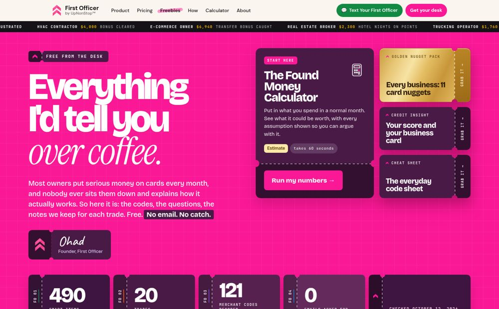
Palette AOne deep partner
Pink hero plus one deep aubergine for every solid block, tonal stubs, gold as the single accent; pillar colours shrink to the kind labels and the FO-number underline.
Open palette AFree From the Desk · direction C · five options
Same 490 items, search, filters, reading view, rail and shelves, and the same gold Golden Nugget card. Only the surfaces change.

Pink hero plus one deep aubergine for every solid block, tonal stubs, gold as the single accent; pillar colours shrink to the kind labels and the FO-number underline.
Open palette A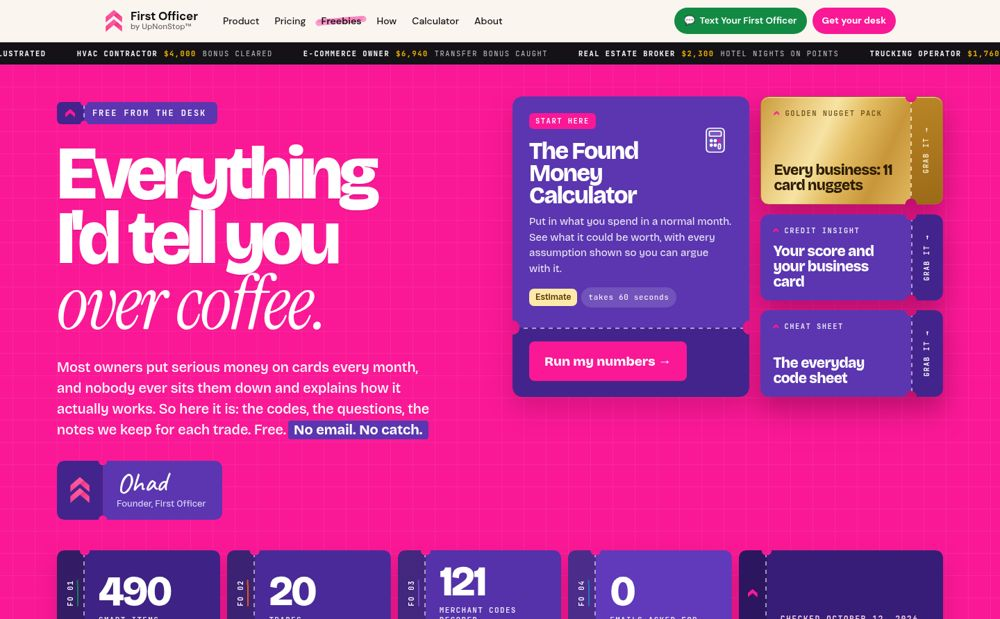
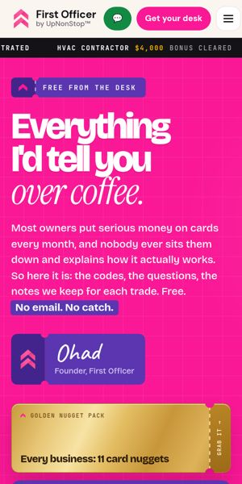
Each section owns one pillar colour in tonal shades only: the hero and stats in deep violet, each desk lane in its own pillar from rail to lead, never two pillars side by side.
Open palette B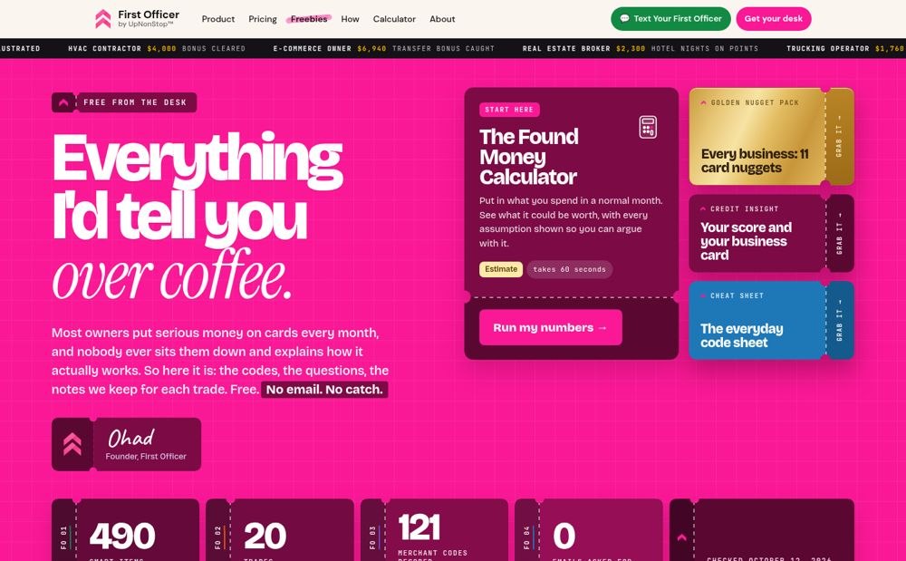
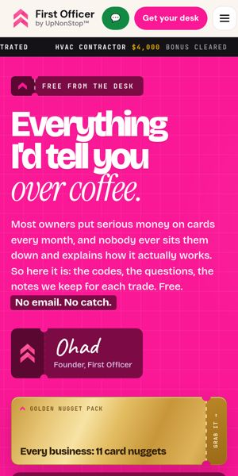
Blocks in deep raspberry and wine drawn from the hero pink, stubs a shade deeper, with Learn blue as the one sparing secondary on the code tape and cheat sheet, plus gold.
Open palette C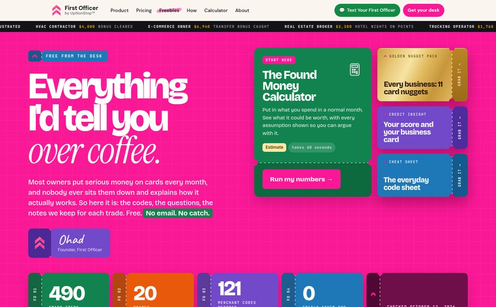
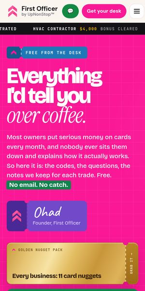
Solid pillar-colour blocks again, each cut as a tear-off ticket: notched perforation, a deeper stub with the flight-number tag and Grab it, white type on green, orange, violet and blue.
Open option 3, matured v2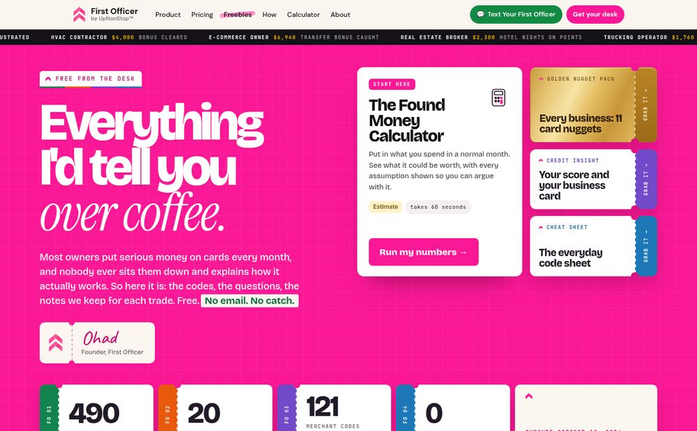
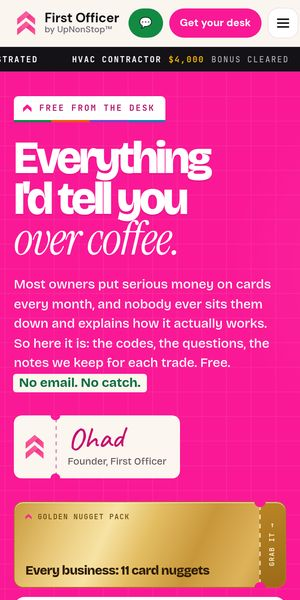
The pillar colours move into tear-off stubs: notched boarding-pass cards with a dashed perforation, a flight-number tag and the Grab it action on a green, orange, violet or blue stub.
Open option 3, matured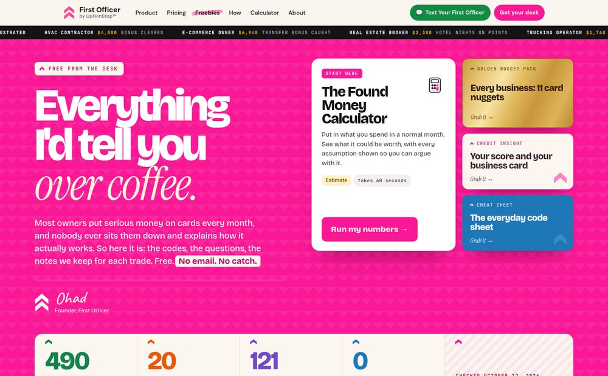
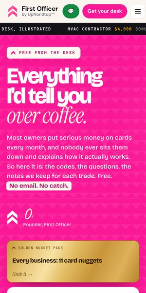
Pink hero, but every black block becomes warm cream paper with pink chevron marks, a cream stats tab, a paper code tape and paper lead cards.
Open option 1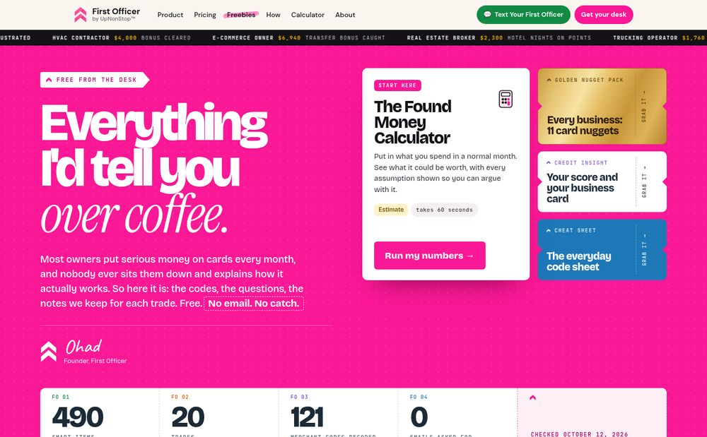
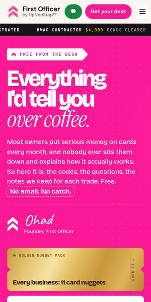
Cards become boarding passes and flight strips: notched edges, dashed tear-off stubs, flight-number labels on the rails and a pale air-traffic-strip code tape.
Open option 2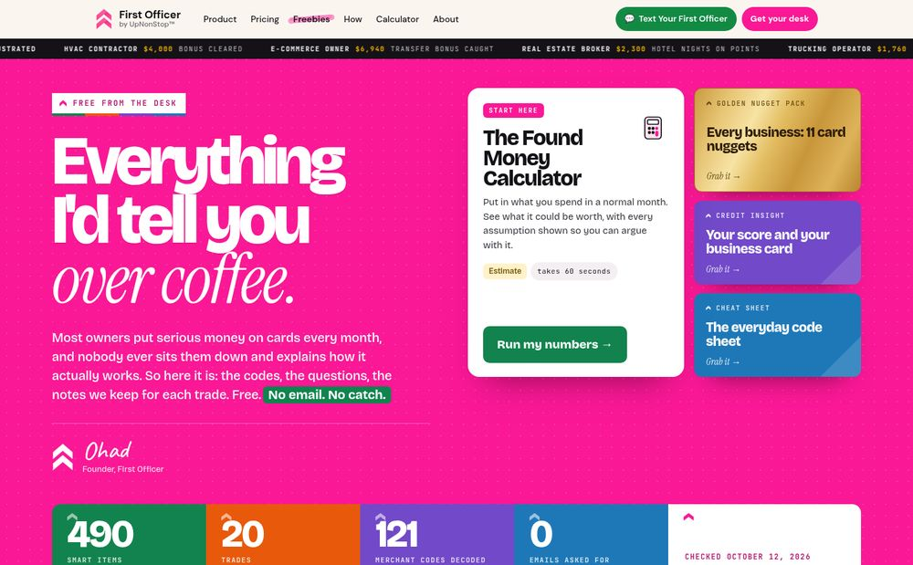
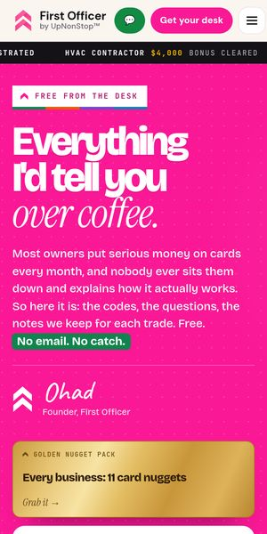
Black is replaced by the four pillar colours: a green, orange, violet and blue stats tab, lead cards in their category colour and a violet endnote.
Open option 3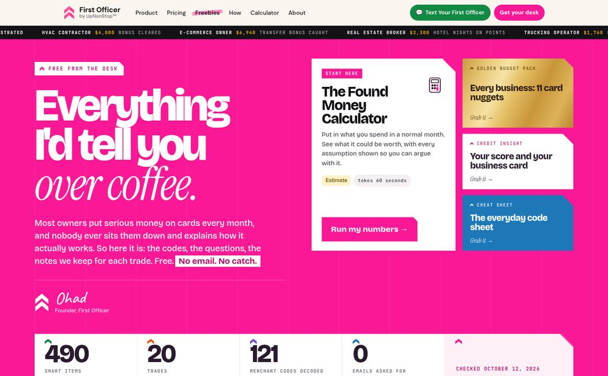
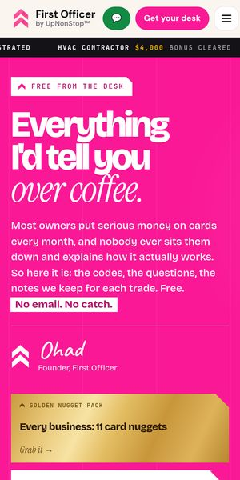
Crisp white cards with a 45-degree cut corner traced in pink, hairline borders, square edges throughout and a pink chevron closing the page.
Open option 4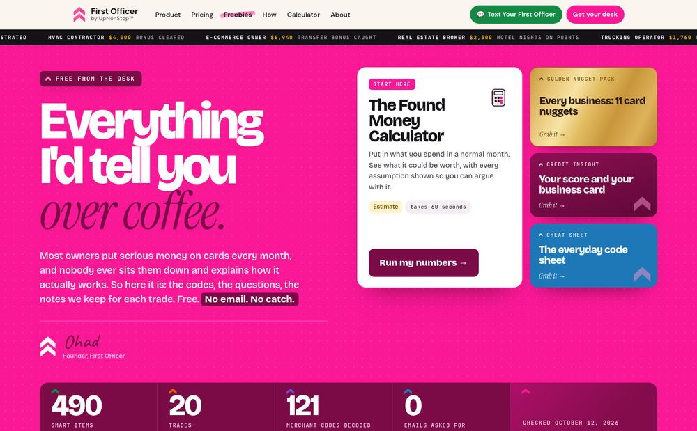
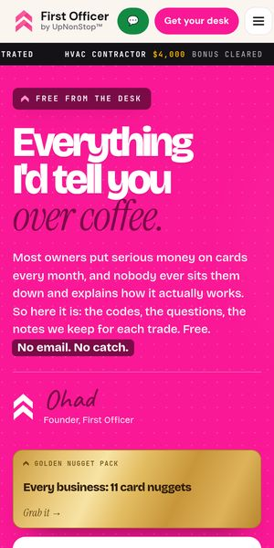
The same bold layout, toned: deep magenta takes the place of black on the stats tab, code tape, lead cards and buttons, on a blush page.
Open option 5Mockups on branch mockups/rebuild-v4, not production. Direction C as it was: ffd-dir-c.